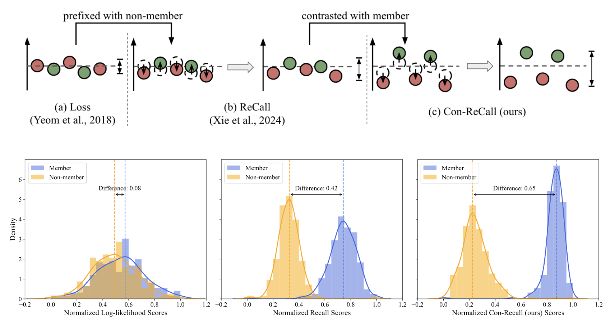
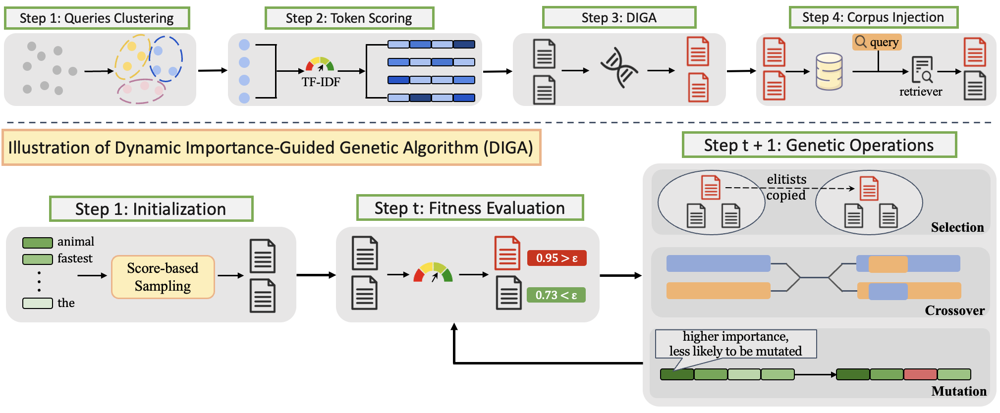
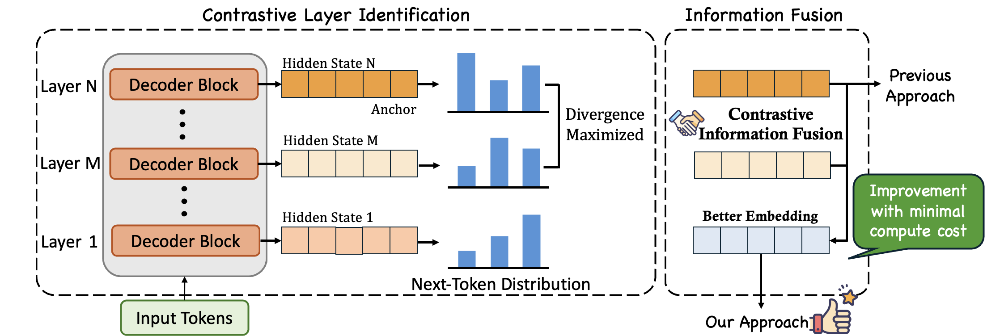

|

|
Con-ReCall: Detecting Pre-training Data in LLMs via Contrastive Decoding
Cheng Wang, Yiwei Wang, Bryan Hooi, Yujun Cai, Nanyun Peng, Kai-Wei Chang
COLING 2025
[pdf] [code]
We proposed a new method for detecting whether a given text belongs to the pre-training data of large language models through contrastive decoding.
|
|

|
Tricking Retrievers with Influential Tokens: An Efficient Black-Box Corpus Poisoning Attack
Cheng Wang, Yiwei Wang, Yujun Cai, Bryan Hooi
Under Review
An efficient black-box corpus-poisoning attack based on Genetic Algorithm.
|
|

|
Beyond the Last Layer: Improving Sentence Embeddings Elicited from LLMs through Contrastive Layer Information Fusion
Cheng Wang, Yiwei Wang, Bryan Hooi, Yujun Cai, Nanyun Peng, Kai-Wei Chang
Under Review
We proposed a method to enhance the quality of sentence emebeddings elicited from LLMs based on information fusion from contrastive layers.
|
Professional & Industry Experience
Tiktok | Singapore
Algorithm Engineer Intern | Jan 2025 - June 2025
National Universiyt of Singapore | Singapore
Teaching Assistant, Introduction to AI and Machine Learning | Jan 2024 - May 2024
|
|
{kind=link}